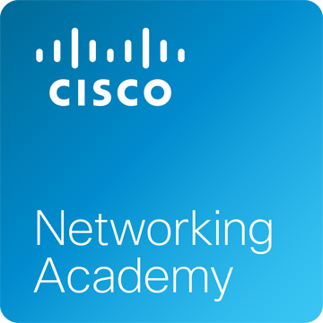

Esse projeto de extensão tem o intuito de apresentar aos alunos conceitos fundamentais de programação orientada a objetos- classes, objetos, operações, mensagens, métodos; polimorfismo; identificação de objetos; abstrações, generalização, subclasses, super classes, instanciação; herança; encapsulamento; abstração de agregação; abstração de composição, construtores; introdução à linguagem java.
Tech in cisco networking academy

A Cisco, através de sua plataforma Cisco Networking Academy, oferece diversos cursos e treinamentos nas áreas de Redes de Computadores, Segurança Cibernética, Programável Infraestrutura, entre outros, que são temáticas importantíssimas para agregar à formação dos alunos dos Cursos de TI. Além disso, esse projeto será um efetivo apoio para a compreensão de Infraestrutura de TI, competências requeridas nas UCs de INFRA dos cursos de TI&C, quais sejam: Ambientes computacionais e conectividade e Sistemas computacionais e Segurança. O professor estará disponível para ajudar os alunos às terças e quartas-feiras, das 18:00 às 19:00. Os atendimentos ajudarão os alunos em suas dificuldades ao longo das trilhas.
Dbyte - Formação google: Cloud
O projeto de extensão "dbyte - Formação Google: Cloud" tem o objetivo de aprofundar o conhecimento sobre Google Cloud. Para concluir o projeto de extensão, os estudantes terão que apresentar os certificados gerados pelo Coursera (https://www.coursera.org/).